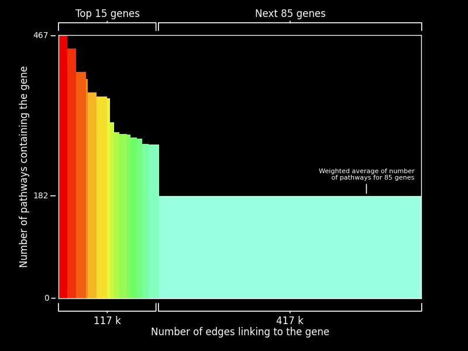

Entry 7¶
Comparing Pathway Ubiquity with Degree of Linkage¶
Devang Thakkar
A pathway is a series of interconnected interactions between genes and proteins that leads to certain transformations in the cell. Taking signals as inputs, these pathways help the organism react to external stimuli. Within an organism, proteins do not exist on their own - they interact with each other and form immensely complex structures known as Protein-Protein Interaction (PPI) networks, with the proteins on the edges and the links between them indicating the presence or absence of interaction. Not all PPIs have been uncovered, yet they play a major role in identifying the relation between structure and function, and new protein functionalities.
In this visualization, we plot the number of pathways containing the gene against the number of edges linked to the gene in PPI networks for the top 100 genes, ranked on the basis of the number of pathways they belong to. 4527 human pathways were extracted from the Consensus Path Database (CPDB), and the PPI network was accessed from String-DB which contained 11.4M interaction edges. We plot the first 15 genes individually to show their relative importance with respect to the next 85 genes. The height of each bar represents the number of pathways it is found in, while width of each bar represents the number of edges linked to it in the PPI network. Thus, the modulation of bin widths helps us to represent another dimension in the same visualization. We find out that the average number of edges linked to the first 15 genes is ~1.6 times higher than the average number of edges for the next 85 genes. Thus we may hypothesize that genes that have a higher number of interactions might be involved more often in biological pathways. This helps us by providing a list of potential genes that may have functionalities that are yet to be discovered.
Code and data: 1